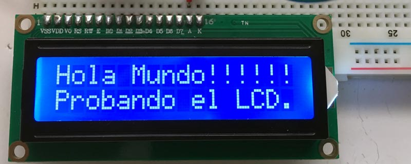
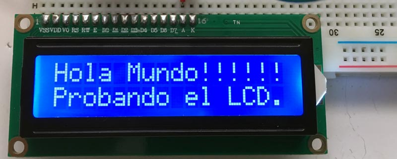
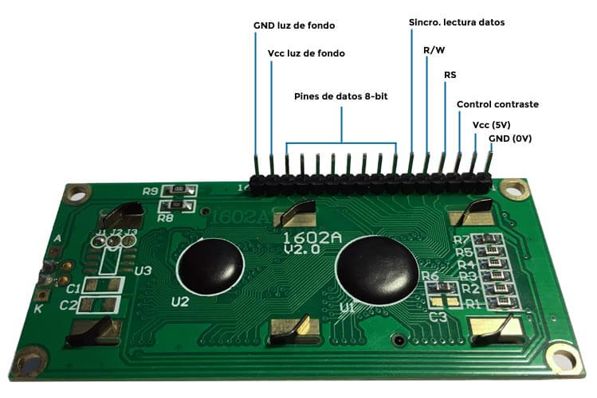

¿Vamos con otra simulación?
En esta práctica con Arduino y Tinkercard, vamos a conocer la pantalla LCD. Con ella podremos mostrar mensajes, lecturas de los sensores, etc.

Mírate antes estos vídeos, encontrarás cosas muy interesantes:
En esta práctica con Arduino y Tinkercard, vamos a conocer la pantalla LCD. Con ella podremos mostrar mensajes, lecturas de los sensores, etc.

Mírate antes estos vídeos, encontrarás cosas muy interesantes:

LCD es el acrónimo de Liquid Crystal Display (en español Pantalla de Cristal Líquido). No es una tecnología novedosa. El LCD lleva con nosotros mucho tiempo, solo tenemos que echar la mirada hacia atrás y recordar esos relojes Casio o las calculadoras que llevamos a clase de matemáticas.
Trabajaremos con un LCD típico, de 16×2. Esto significa que vamos a poder mostrar 16 caracteres en dos filas distintas
Conexiones de un LCD con Arduino
La pantalla LCD que usaremos, vienen con una fila de dieciséis pines. Los primeros catorce pines se utilizan para controlar la visualización. Los dos últimos pines son para la iluminación de fondo:
| PIN | FUNCIÓN |
| 1 | GND (Tierra) |
| 2 | 5 Voltios |
| 3 | Control de contraste pantalla |
| 4 | RS – Selector entre comandos y datos |
| 5 | RW – Escritura y lectura de comandos y datos |
| 6 | Sincronización de lectura de datos |
| 7 al 14 | Pines de datos de 8-bit |
| 15 | Alimentación luz de fondo (5V) |
| 16 | GND (Tierra) luz de fondo (0V) |
Esta imagen muestra la parte de abajo del LCD.
Cuando lo conectes a la protoboard los pines estarán invertidos horizontalmente.
Pues vamos a hacer que nuestra pantalla LCD muestre "Hola Mundo !!!!!!"
Componentes que vamos a necesitar:
La resistencia de 330 Ω permite regular el voltaje a la entrada de la alimentación del LCD.
Lee atentamente:
Ver solución aquí:
Si quieres ver otra ayudita, mira aquí
Obra publicada con Licencia Creative Commons Reconocimiento No comercial Compartir igual 4.0